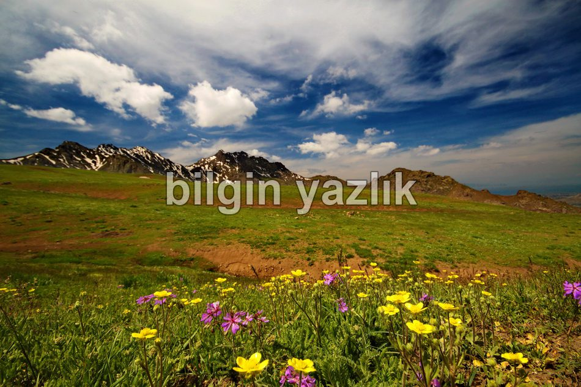
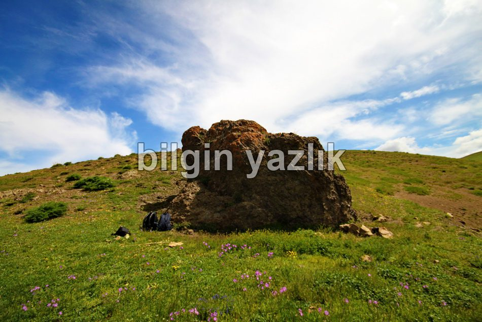
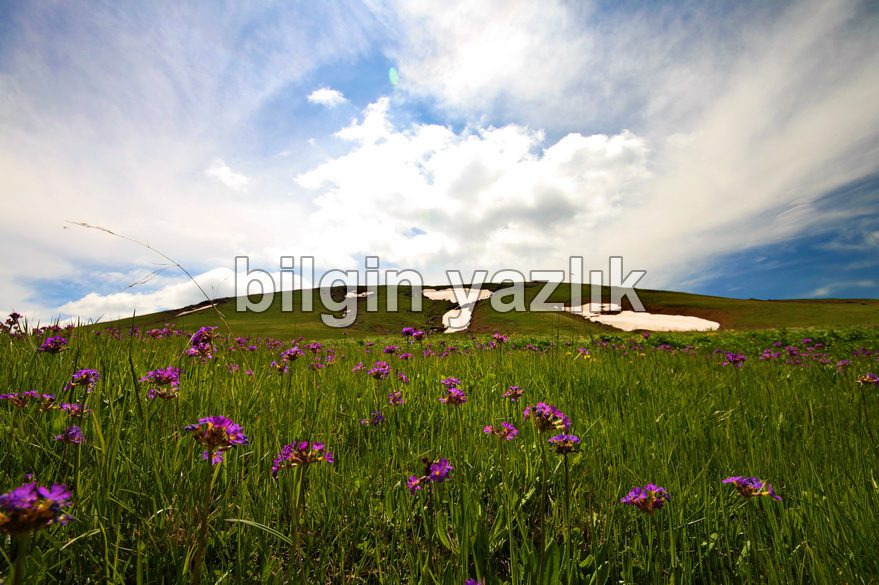
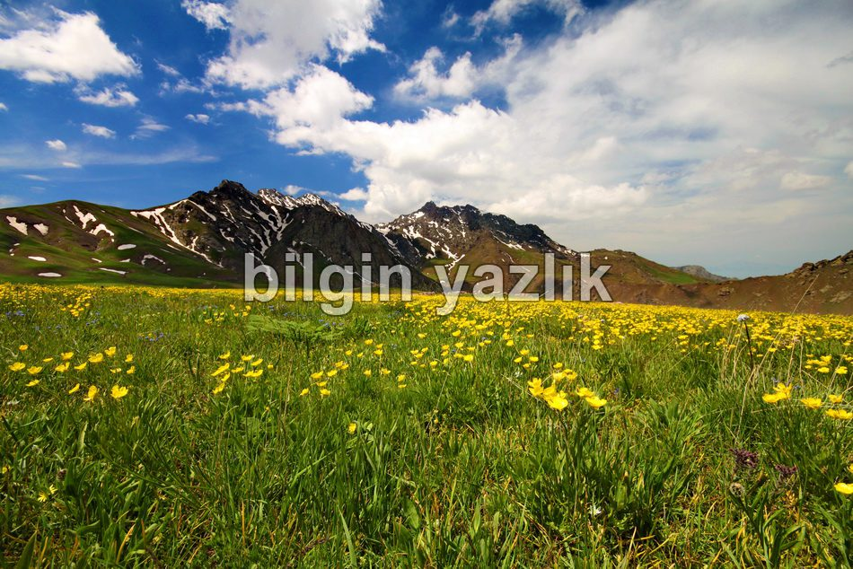

Van Gölü Havzası · 30 Mayıs 2013
Değirmenköy Yaylası
Erek dağının eteklerinden bu küçük köyün eski adının Tarman olduğu rivayet edilmektedir. Cumhuriyet dönemi ile beraber Değirmenköy adını almıştır. Köyün yukarısında Erek dağının koynunda güzel bir yaylası vardır. Yaylada çok sayıda tatlı su kaynağı bulunuyor ve yüzlerce çeşit çiçeğe ve ota ev sahipliği yapıyor. Yayladaki su kaynaklarından ikisinin adı Tacettin ve İbrahimdir. Yaylada bir tane de büyükçe bir kaya bulunuyor, Ramazan aylarında köy imamı bu kaya üzerinde ezan okurmuş. Köylüler toprağı eşerek çamurdan tandır da yaparlarmış, bugün hala tandırlar duruyorlar. Yaylanın rakımını 2455 mt olarak ölçtüm.





Bu yazı taliyol arşivinden taşınmıştır. · özgün kayıt